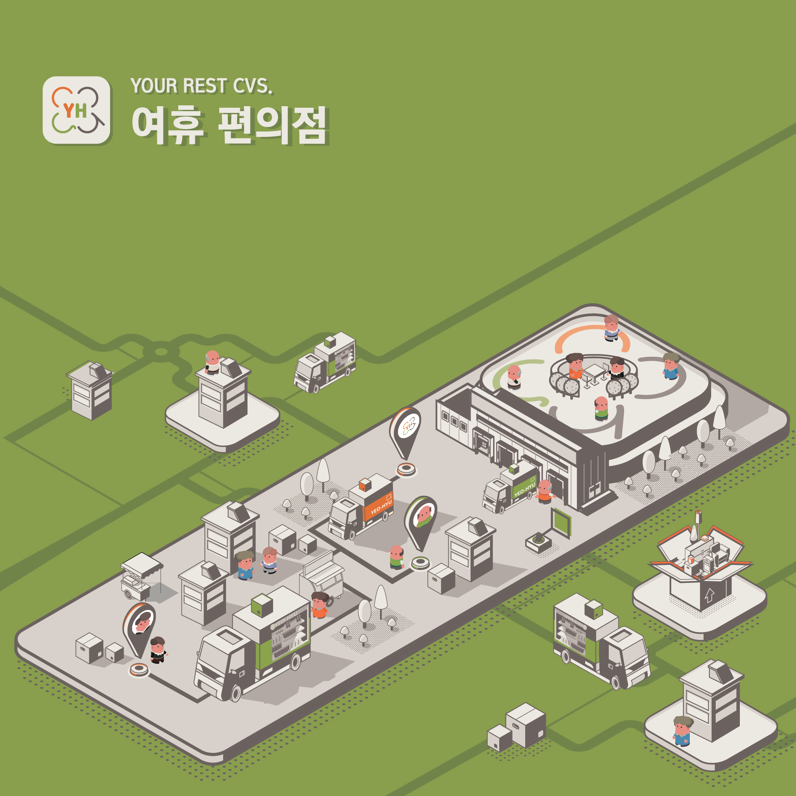

공방에서 세상에 하나뿐인 나만의 공예품을 만들고 싶지만 공방을 찾는 것에 어려움을 겪는 사람들,
또는 직접 만드는 것에 부담감을 느끼는 사람들을 위해 공방에 직접 방문하지 않고도
원하는 공예품을 디자인할 수 있는 E SHOP인 헤르츠를 제작 및 디자인하였습니다.
헤르츠에서는 단순 E SHOP뿐만 아니라 커스터마이징 기능을 추가하여
사용자가 GUI 화면을 직접 보면서 실시간으로 커스터마이징 기능을 수행할 수 있어
손쉽게 나만의 악세서리 제작이 가능합니다.

Multimedia Design여휴 편의점
비싼 가격에 비해 영양가 없고 자극적인 음식들, 높은 선반, 작은 글씨,
20-30대 중심 제품 등 시니어들이 편의점을 이용하기에는 적합하지 않은 이유들이 즐비하다.
인구 고령화가 계속해서 진행되는 현재, ‘우리는 시니어들에게 맞는 편의점을 찾을 순 없을까?’
라는 문제를 가지고 여휴 편의점이라는 서비스를 기획하게 되었다.